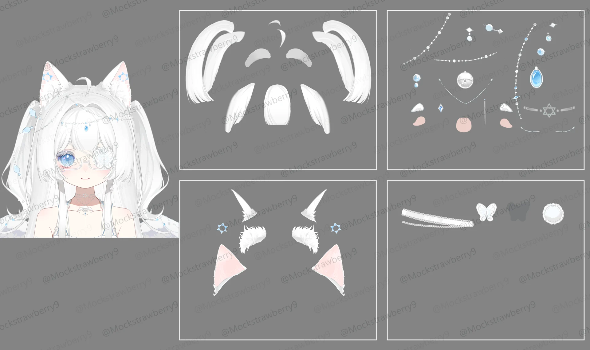
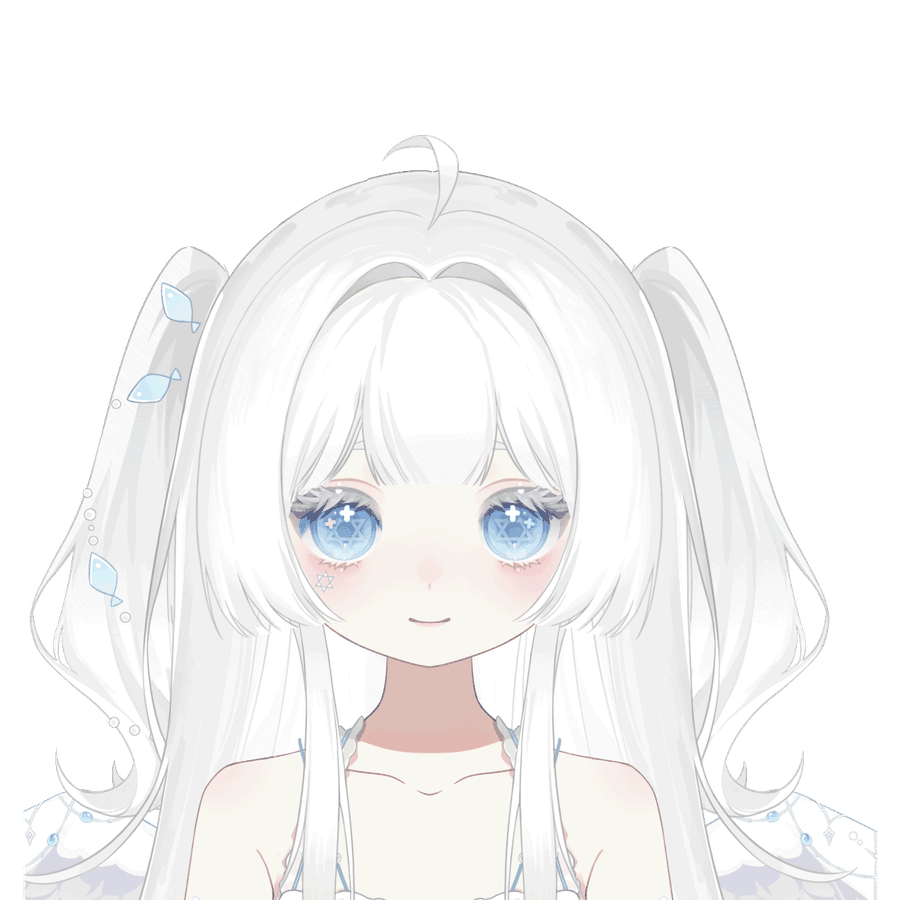
インタラクティブ技術ショーケース · 2Dパーツ分け＆キャラクターパイプラインスタジオ
千レイヤー破綻ゼロ、読み込み即リギング——工業品質2Dパーツ分け＆キャラパイプライン制作スタジオ @kiriframe_art
仕切りをドラッグして2件の商用リテイク事例（左右領域）を比較。200%拡大ルーペで筆致の連続性をご確認ください。

 BEFOREAFTER
BEFOREAFTER

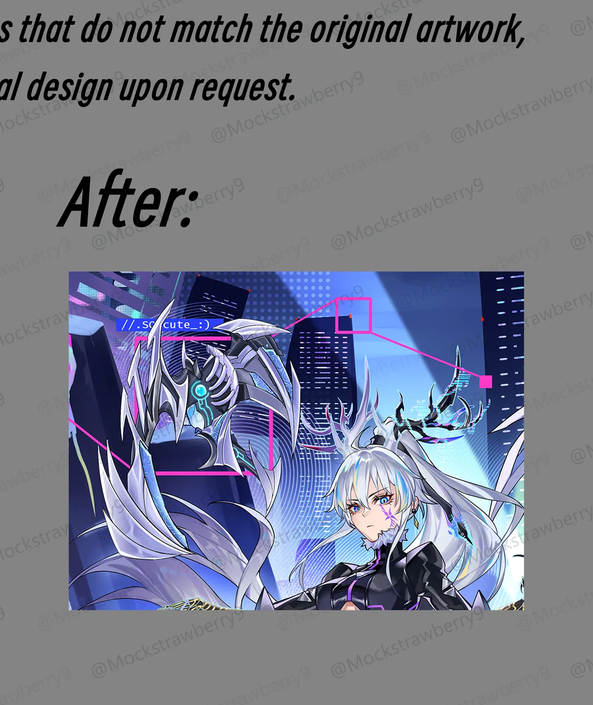
BEFOREAFTER厚塗り逆算・シーンCG・重型レース・薄紗の4点。カードをクリックで拡大表示します（偽のスライダー比較は行いません）。
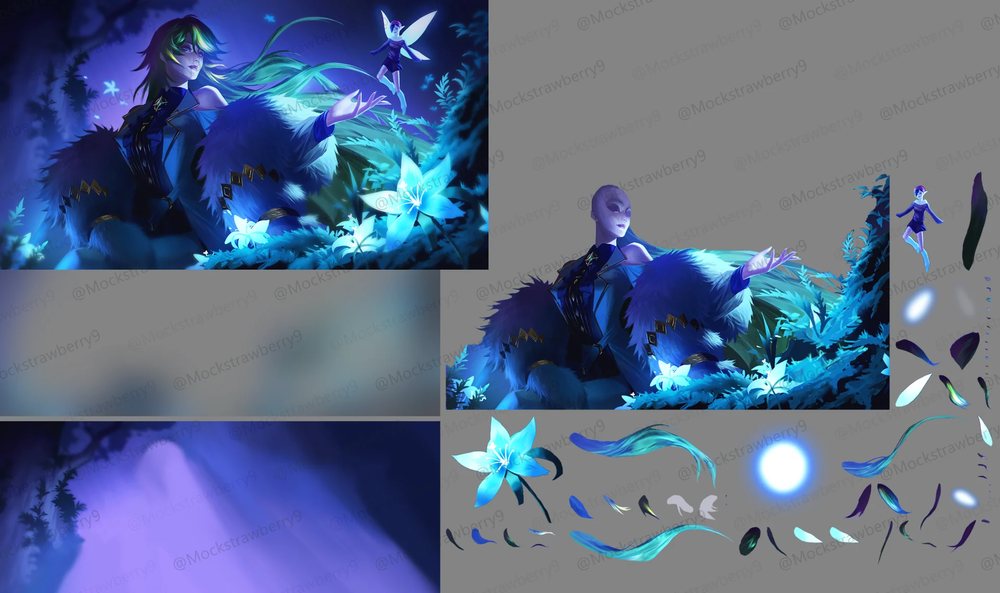

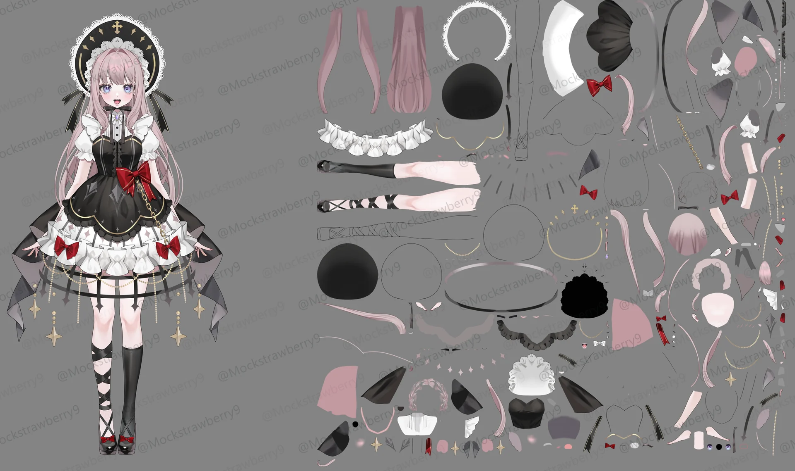
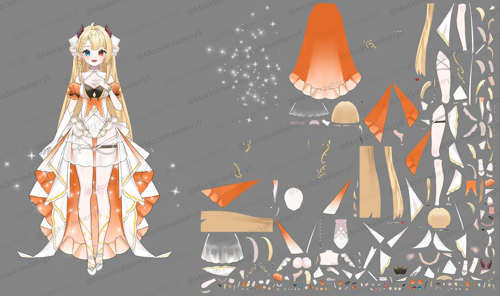
上部のアニメーションは目の組み立て→閉眼→レイヤー爆発のサイクルです。タブで各顔サブシステムをご確認ください。

 Z順: 虹彩→ハイライト→まつげ
Z順: 虹彩→ハイライト→まつげ虹彩／ハイライト／上下まつげ／閉眼ラインを完全分離。ウィンク・視線リグが破綻しません。
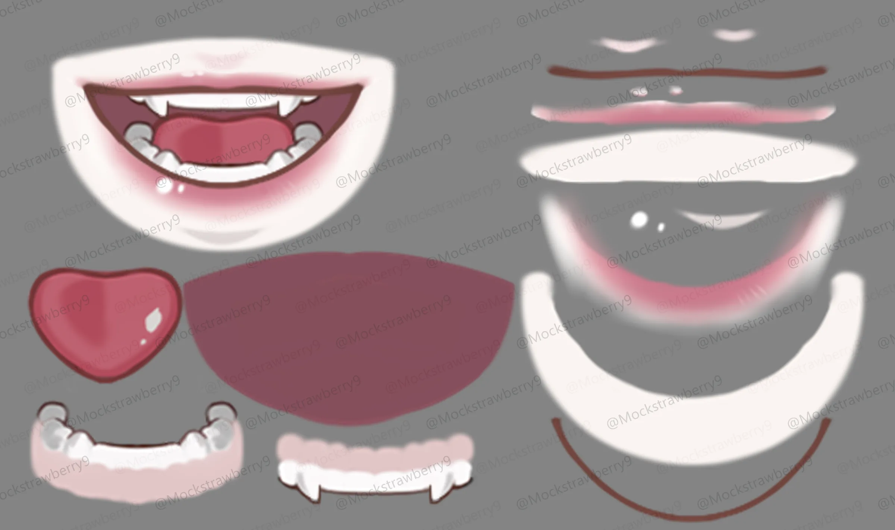
VBridger-ready唇・上下の歯・舌・口腔を完全分離。未検証のパラメータ数値は書かず、構造は VBridger-ready。
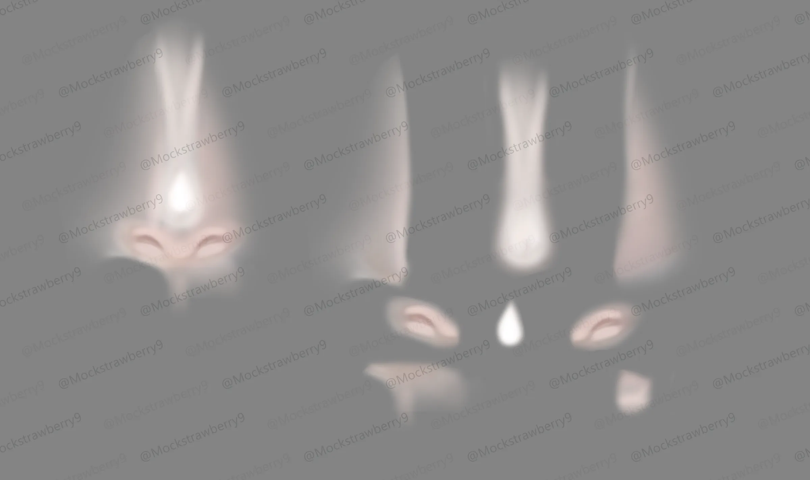

顔ベース・赤面ハイライト・鼻を独立レイヤー化。角度追従の描き足しが安全に。
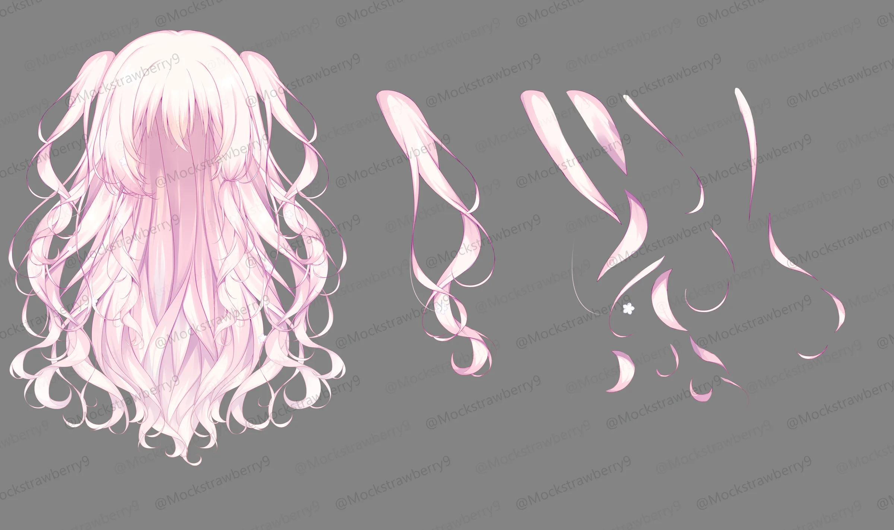
30°〜45° 頭部回転マージン前髪・中間・後ろ髪を物理グループ別に分離。30°〜45°の頭部回転マージンを確保。
Component Physics Previews · Tier 2 Co-Delivery Pilot (3 Slots)
各カードは平展パーツ図と部位別の物理GIFを対で表示します。平展図をクリックすると拡大、タブ切替で各パーツの実機挙動を確認できます。




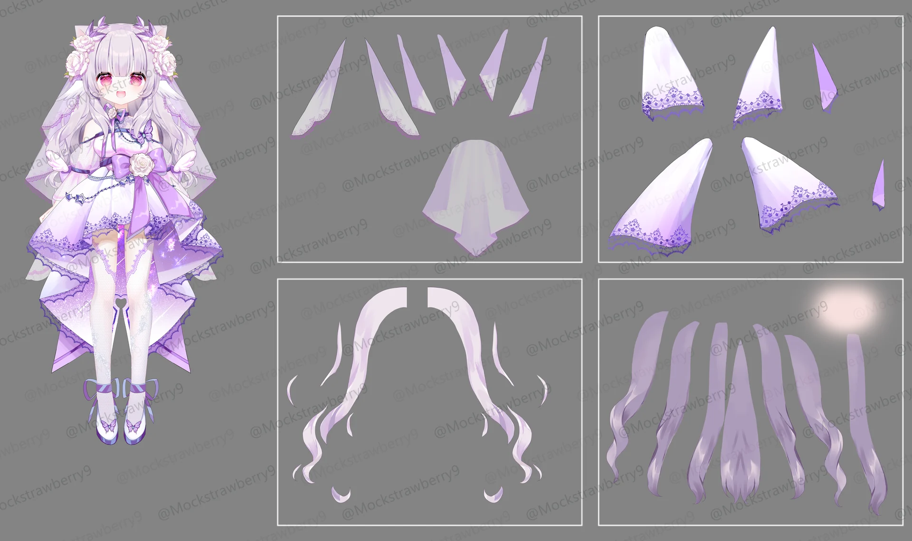
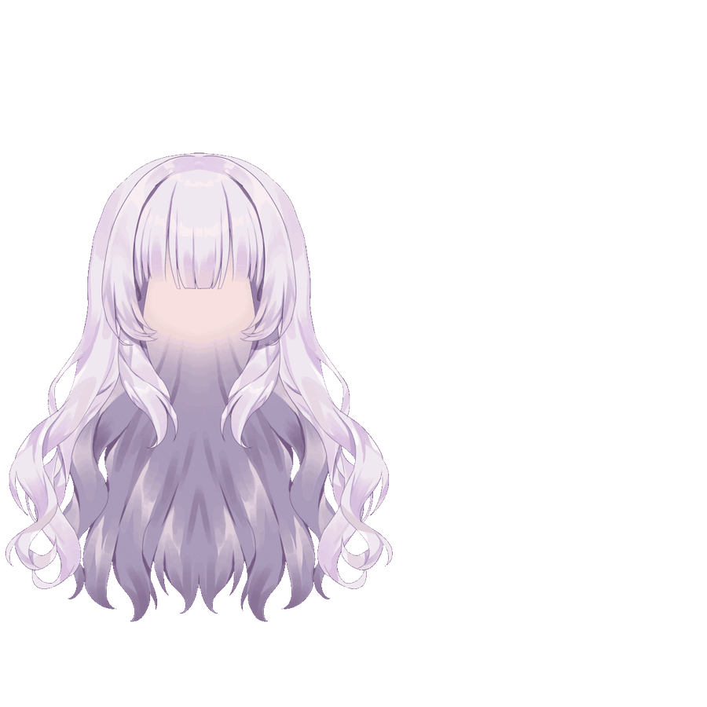
カテゴリで絞り込み、カードをクリックで拡大表示。アーカイブ透かしに関する注記は下記の通りです。
アーカイブ実績にはリードアーティストの旧個人透かし（@Mockstrawberry9）が含まれます。NDA対応のクリーンサンプルはお問い合わせ時に個別提示可能です。
JSON駆動の折りたたみツリー。命名規格は EN/JA/KO/ZH で即切替——リガーが手でリネームしない標準バインド構造。
出荷ゲートは実際に動作するスクリプトです。ソース全文とデモ実行レポートをそのまま掲載しています。
#!/usr/bin/env python3
# -*- coding: utf-8 -*-
"""psd_preflight_check.py - KiriFrame Studio production preflight (v1.0).
Zero-dependency (Python standard library only) gate that scans a rig-ready
PSD layer manifest BEFORE the file reaches Cubism/Spine:
* orphan semi-transparent alpha noise pixels (must be 0)
* empty layers (must be 0)
* duplicate layer names (must be 0)
* layers poking outside the canvas (must be 0)
* naming-convention violations (must be 0)
* color mode (must be sRGB 8-bit)
Usage:
python psd_preflight_check.py --demo
Built-in synthetic clean-manifest self-check (exit 0).
python psd_preflight_check.py --manifest manifest.json
Scan a real manifest exported from a PSD (exit 0 = pass, 2 = issues).
Manifest schema:
{"canvas": {"width": 4096, "height": 4096, "color_mode": "sRGB 8-bit"},
"layers": [{"name": "Eye_L/Iris", "bounds": [l, t, r, b],
"has_pixels": true, "orphan_alpha_noise_pixels": 0}, ...]}
"""
import argparse
import json
import sys
GROUP_PREFIXES = (
"Head/", "VBridger_Mouth/", "Eye_", "Hair_", "Body/", "Outfit_",
"Physics_Accessories/", "FX/", "Guide/",
)
def scan(layers, canvas):
issues = {
"orphan_alpha_noise": 0,
"empty_layers": 0,
"duplicate_names": 0,
"offcanvas_layers": 0,
"naming_violations": 0,
}
seen = {}
for layer in layers:
name = layer.get("name", "")
if not layer.get("has_pixels", True):
issues["empty_layers"] += 1
issues["orphan_alpha_noise"] += int(layer.get("orphan_alpha_noise_pixels", 0) or 0)
seen[name] = seen.get(name, 0) + 1
bounds = layer.get("bounds")
if bounds and (bounds[0] < 0 or bounds[1] < 0
or bounds[2] > canvas.get("width", 10 ** 9)
or bounds[3] > canvas.get("height", 10 ** 9)):
issues["offcanvas_layers"] += 1
if not name.startswith(GROUP_PREFIXES):
issues["naming_violations"] += 1
issues["duplicate_names"] = sum(c - 1 for c in seen.values() if c > 1)
return issues
def demo_manifest():
"""Synthetic clean manifest exercising every check path (all zeros)."""
layers = [
{"name": "Head/Face_Base", "bounds": [512, 256, 3584, 3840],
"has_pixels": True, "orphan_alpha_noise_pixels": 0},
{"name": "Eye_L/Iris", "bounds": [1200, 1100, 1700, 1500],
"has_pixels": True, "orphan_alpha_noise_pixels": 0},
{"name": "Eye_L/Eyelash_Top", "bounds": [1150, 1020, 1780, 1180],
"has_pixels": True, "orphan_alpha_noise_pixels": 0},
{"name": "Eye_L/Eyelid_Closed", "bounds": [1150, 1180, 1780, 1520],
"has_pixels": True, "orphan_alpha_noise_pixels": 0},
{"name": "Eye_R/Iris", "bounds": [2396, 1100, 2896, 1500],
"has_pixels": True, "orphan_alpha_noise_pixels": 0},
{"name": "Eye_R/Eyelash_Top", "bounds": [2320, 1020, 2950, 1180],
"has_pixels": True, "orphan_alpha_noise_pixels": 0},
{"name": "VBridger_Mouth/Teeth_Upper", "bounds": [1900, 2100, 2200, 2200],
"has_pixels": True, "orphan_alpha_noise_pixels": 0},
{"name": "VBridger_Mouth/Tongue", "bounds": [1920, 2200, 2180, 2320],
"has_pixels": True, "orphan_alpha_noise_pixels": 0},
{"name": "VBridger_Mouth/Mouth_Interior", "bounds": [1850, 2050, 2250, 2360],
"has_pixels": True, "orphan_alpha_noise_pixels": 0},
{"name": "Hair_Front/Fringe", "bounds": [700, 200, 3400, 1400],
"has_pixels": True, "orphan_alpha_noise_pixels": 0},
{"name": "Hair_Back/Tail", "bounds": [400, 300, 3700, 2600],
"has_pixels": True, "orphan_alpha_noise_pixels": 0},
{"name": "Outfit_Set_A/Top", "bounds": [900, 1800, 3200, 3900],
"has_pixels": True, "orphan_alpha_noise_pixels": 0},
{"name": "Physics_Accessories/Pendant", "bounds": [2000, 2400, 2300, 2900],
"has_pixels": True, "orphan_alpha_noise_pixels": 0},
]
return {"canvas": {"width": 4096, "height": 4096, "color_mode": "sRGB 8-bit"},
"layers": layers}
def main():
ap = argparse.ArgumentParser(description="Rig-ready PSD preflight checker")
ap.add_argument("--demo", action="store_true",
help="run the built-in clean-manifest self-check")
ap.add_argument("--manifest", metavar="FILE",
help="layer manifest JSON exported from a PSD")
args = ap.parse_args()
if args.demo:
manifest = demo_manifest()
source = "--demo (built-in clean manifest)"
elif args.manifest:
with open(args.manifest, encoding="utf-8") as fh:
manifest = json.load(fh)
source = args.manifest
else:
ap.error("nothing to scan: pass --demo or --manifest FILE")
canvas = manifest.get("canvas", {})
layers = manifest.get("layers", [])
issues = scan(layers, canvas)
color_mode = canvas.get("color_mode", "unknown")
color_ok = color_mode == "sRGB 8-bit"
passed = color_ok and all(v == 0 for v in issues.values())
log = [
f"[Preflight] source : {source}",
f"[Preflight] layers scanned : {len(layers)}",
f"[Preflight] orphan alpha noise pixels : {issues['orphan_alpha_noise']}",
f"[Preflight] empty layers : {issues['empty_layers']}",
f"[Preflight] duplicate layer names : {issues['duplicate_names']}",
f"[Preflight] off-canvas layers : {issues['offcanvas_layers']}",
f"[Preflight] naming convention violations : {issues['naming_violations']}",
f"[Preflight] color mode : {color_mode}",
f"[Preflight] RESULT : {'PASS' if passed else 'FAIL'}",
]
print("\n".join(log))
report = {"tool": "psd_preflight_check.py", "version": "1.0", "source": source,
"layers_scanned": len(layers), "issues": issues,
"color_mode": color_mode, "pass": passed}
print(json.dumps(report, indent=2, ensure_ascii=False))
sys.exit(0 if passed else 2)
if __name__ == "__main__":
main()
[Preflight] source : --demo (built-in clean manifest)
[Preflight] layers scanned : 13
[Preflight] orphan alpha noise pixels : 0
[Preflight] empty layers : 0
[Preflight] duplicate layer names : 0
[Preflight] off-canvas layers : 0
[Preflight] naming convention violations : 0
[Preflight] color mode : sRGB 8-bit
[Preflight] RESULT : PASS
{
"tool": "psd_preflight_check.py",
"version": "1.0",
"source": "--demo (built-in clean manifest)",
"layers_scanned": 13,
"issues": {
"orphan_alpha_noise": 0,
"empty_layers": 0,
"duplicate_names": 0,
"offcanvas_layers": 0,
"naming_violations": 0
},
"color_mode": "sRGB 8-bit",
"pass": true
}
価格はベースラインアンカー（実勢補正前）。最終見積はPSD実査が前提です。
| 区分 | 範囲とSLA | JP（JPY） | EN（USD） | KR（KRW・B2B USD） |
|---|---|---|---|---|
| ① パイロット／レスキュー診断 | 単パーツの原画級リタッチ（L10級）、VBridger対応の顔・口精密分け、既存モデルの衣装／髪互換拡張 · 2〜3日 | ¥30,000–70,000 | $200–500 | ₩250,000–650,000 (B2B $200–500) |
| ②-A 標準フルパーツ分け | 全身300〜500層の規格分け＋30°〜45°の隠れ部分描き足し＋自動アルファ検査＋日英韓中命名 · 3〜5日 | ¥90,000–150,000 | $550–950 | ₩800,000–1,400,000 (B2B $550–950) |
| ②-B 重型／統合稿拯救フラッグシップ | 600〜1000+層の重型資産＋VBridger対応顔・口＋3セット以上の衣装差分または15+差分。または統合PSD・厚塗り立ち絵の逆算拯救 · 5〜7日 | ¥160,000–320,000+ | $1,000–2,200+ | ₩1,500,000–3,000,000+ (B2B $1,000–2,200+) |
| ③-A パーツ分け＋Live2D/Spine 共同納品 Tier 2 · Wave 2 | パーツ分け一式＋提携シニアリガーによるリギング納品（日程確定後に共同納品見積） | ¥250,000–550,000+ | $1,800–4,500+ | ₩2,200,000–5,000,000+ (B2B $1,800–4,500+) |
| ③-B 3Dキャラ＋エンジンTAフルスタック Tier 3 · Wave 3 | 3Dモデリング／トポロジ／UV／マテリアル／リギング＋Unity・Unreal・VRMエンジン対応ハンドオフ | Wave 3 Pipeline Expansion · Custom Inquiry Only | ||
| ④ スタジオ月額リテイナー | 毎月3〜4件の標準または2件の重型パーツ分け枠＋優先スケジュール＋48時間無料構造修正（小売約70%の卸アンカー） | ¥240,000–450,000 / mo | $1,600–3,000 / mo | ₩2,200,000–4,200,000 / mo (B2B $1,600–3,000 / mo) |
記載価格はベースラインアンカーであり最終見積ではありません。実際の範囲はPSD全文の調査（レイヤー数・差分・角度対応）が前提です。
48時間特急：基本価格の+50%。24時間救急（デビュー・イベント前）：+80〜100%、原画確認のうえ全額前払いで枠を確保。
最終入金前：透かし付きパーツ展開検収図＋レイヤーツリー全図＋ノイズゼロ検査報告。入金確認後：透かしなし母本ファイルを即時リリース（リギング対応PSD。L3買収時は転売・サブライセンス権付与）。L2/L3の母本には1枚の互換マニフェスト（ソフト版本・キャンバスサイズ・sRGB 8-bit）を必ず同梱。